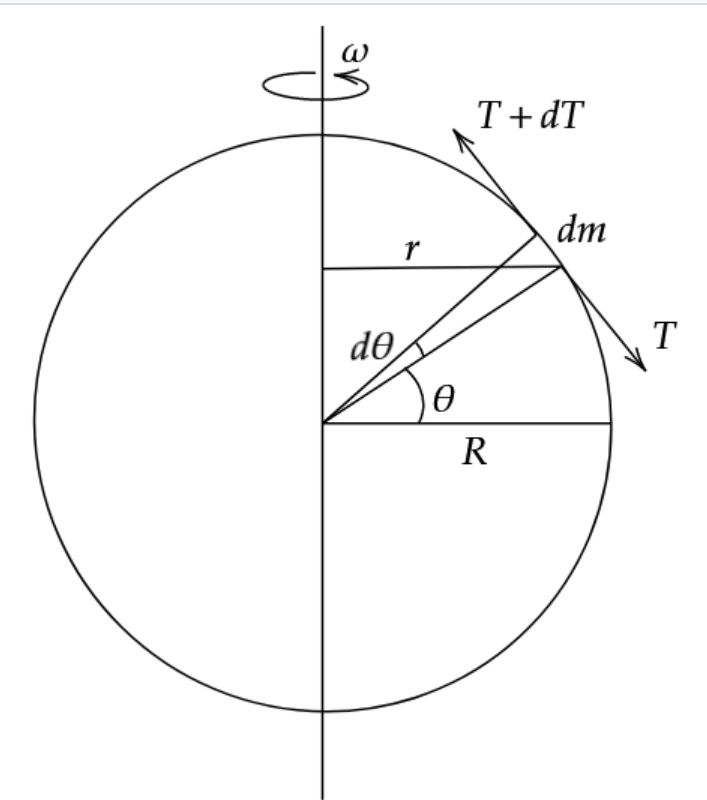
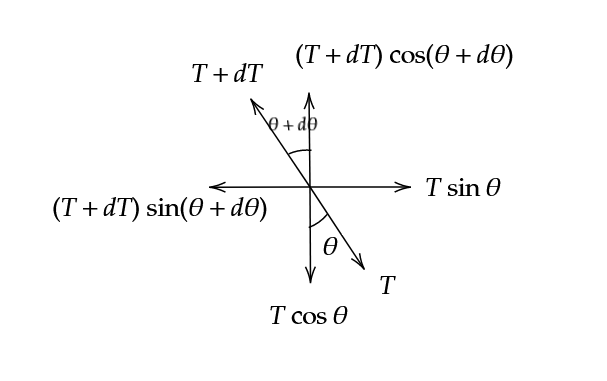

Solution: Let tension be T.

Free Body diagram for elementary section of ring.

Force balance along vertical,
\[(T+dT) \cos(\theta + d \theta) = T \cos \theta\tag1\]
Centripetal force acting inwards along horizontal,
\[(T+dT)\cos(\theta + d \theta) - T \sin \theta = dm(r)(\omega^2)\tag2\]
Simplifying (1),
\[T\sin\theta d \theta = dT \cos \theta\tag1\]
Simplifying (2),
\[T\cos\theta d \theta + dT \sin \theta = \frac{MR\omega^2}{2\pi} \cos \theta d \theta \tag2\]
Let \(T_0 = \frac{MR\omega^2}{2\pi}\)
Substituting (1) in (2), we get
\[\cos \theta (dT cot \theta) + dT \sin \theta = T_0 \cos \theta d \theta\]
\[dT = T_0 \sin \theta \cos \theta d \theta\]
Integrating,
\[\int_{T_0}^{T} dT = \frac{T_0}{2} \int_{0}^{\theta} \sin 2\theta d\theta\]
\[T = T_0\left( 1 + \frac{1}{2} \sin^2 \theta \right)\]
\[\therefore T = \frac{MR\omega^2}{2\pi}\left(1 + \frac{1}{2}\sin^2 \theta \right)\]
Implications of the above result. Tension at horizontal level (\(\theta = 0\)), \(T_A = \frac{MR\omega^2}{2\pi}\) Tension at vertical, i.e. top and botton points (\(\theta = \frac{\pi}{2}\)), \[T_B = \frac{3}{2}\frac{MR\omega^2}{2\pi}\]
This implies that Tension at top and bottom points is greater than tension at midpoint..
Intuitively, it would feel like tension would be maximum at the midpoints(pt A), and be 0 at top and bottom points(pt B). However, as we have solved it, we can see that tension at A is minimum, and increases as we move up or down. But, our intuitiveness is not wrong, just misguided. If we consider a small section about the point B, we see that tension forces left and right cancel out to give a net force of 0. But actually it would be \(T_B\). This is the key point.